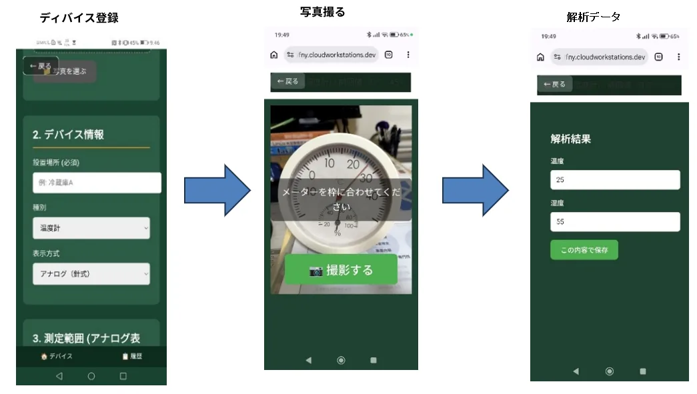

高精度モデル
初回のみ高精度モデルによる計器情報の学習および設定を実施します。
DX初期投資の壁
既存設備を活用しながら、目視で行っていた現場確認をデジタル化することを目指します。
中古スマホによる「画像」のデジタル化。メーターの数値やランプの状態など、目視で行っていた確認作業を自動化します。
温湿度計などのアナログ計器をスマートフォンで撮影し、生成AIによる画像解析を活用して測定値を自動認識します。事前に計器情報を定義することで、既存設備を活用した低コストなデジタル化を実現します。
初回のみ高精度モデルによる計器情報の学習および設定を実施します。
通常運用時は軽量モデルによる高速・低コストな自動解析を実現します。
温度・湿度データをJSON形式で構造化し、端末内へ保存します。
デバイス登録、写真撮影、AIによる解析・データ化までの流れです。

LLMで実現する アナログメーター読み取り・電子化
実装デモを動画で紹介しています。